| 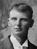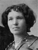 |
Peter Edwin Anderson
29 Jan. 1874 - 12 Mar. 1961
Married Roseanna MarieTalbot 27 Sept. 1893
The 1st child of Anders Peter and Martha Ann Lovell Anderson
|
| 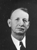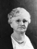 |
John Lee Anderson
30 May 1876 - 20 June 1961
Married Emma Estell Broadhead 10 Jan. 1900
The 2nd child of Anders Peter and Martha Ann Lovell Anderson
|
| * | Martha Ellen Anderson - 3rd child, 27 May 1879 - 14 Dec. 1879 |
| * | Ann Elizabeth Anderson - 4th child, 27 May 1879 - 14 Dec. 1879 |
| 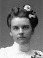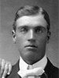 |
Sylvia Alice Anderson
25 Feb. 1881 - 15 Jul 1952
Married Ole William Jacobson 4 Oct. 1905
The 5th child of Anders Peter and Martha Ann Lovell Anderson
|
| 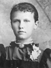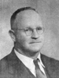 |
Agnes Eleanor Anderson
6 Oct. 1883 - 30 June 1945
Married Edward Leo Lyman, Jr. 8 Apr. 1903
The 6th child of Anders Peter and Martha Ann Lovell Anderson
|
| 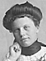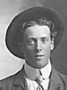 |
Sarah Delilah Anderson
18 Oct. 1886 - 13 Mar. 1973
Married Eddie Mathias Jacobson  19 Aug 1907 19 Aug 1907
The 7th child of Anders Peter and Martha Ann Lovell Anderson
|
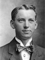1 2 2 |
George Hyrum Anderson
7 July 1889 - 9 Sep. 1978
Married Adele Rosalind Hegyessy 31 May 1916
Married Sarah Curtis Christensen 29 Mar 1963
The 8th child of Anders Peter and Martha Ann Lovell Anderson
|
| 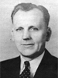1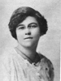2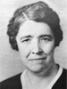 |
Joseph Elmer Anderson
11 May 1894 - 5 Feb. 1983
Married Laura Arlene Trumbo 1 Dec. 1916
Married Lorena Ridges Wood 20 June 1928
The 9th child of Anders Peter and Martha Ann Lovell Anderson
|


 10 Dec. 1847 - 9 Apr. 1932
10 Dec. 1847 - 9 Apr. 1932